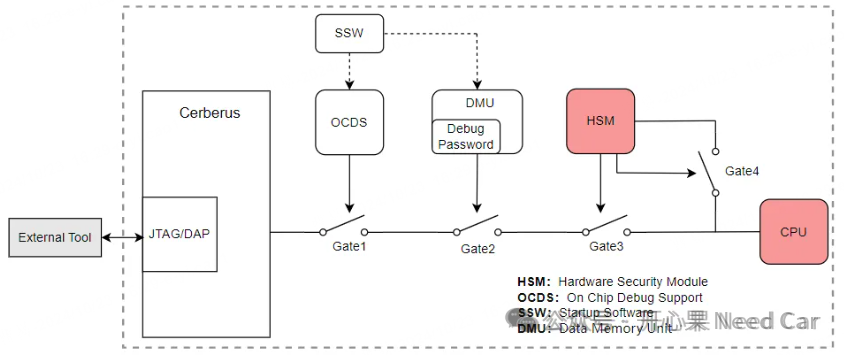

开心果 Need Car · 2024-10-29T06:35:00+08:00 · 微信原文
付费文章：当前仅保存公开试读部分，全文尚未获取。
在前文《信息安全，硬件Debug口，如何保护？》讨论了硬件Debug口的处理方式、调试接口的类型以及调试口解锁的几种方式。本文则进一步讨论如何通过调试器（eg：Lauterbach）设置密码及软件解锁。
针对TC3xx芯片，我们知道，Debug的防护层级可以分为如下四个层级：Gate1、Gate2、Gate3、Gate4。

提示：本文主要讨论Gate1、Gate2的防护
1、如何通过Lauterbach设置Debug Password及解锁
对于Gate1、Gate2的防护，密码存储有两种方式：密码存储在UCB区域或者密码存储在PFlash区域。假设密码设置在UCB区域，主要讨论UCB_DBG_ORIG（UCB18）和 UCB_DBG_COPY（UCB26）的操作。
UCB_DBG_ORIG/UCB_DBG_COPY对应的内容如下所示：